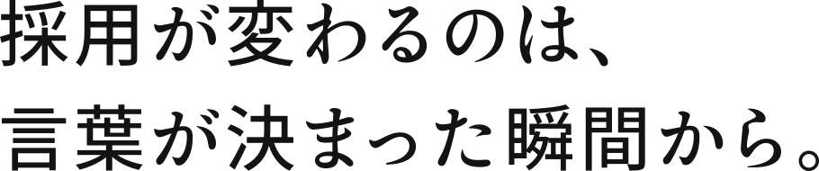
自社の魅力・差別化ポイント・狙う人物像を整理し、
求職者の心に刺さる採用メッセージ（コンセプト）を言語化。
さらにWebで検証テストまで行い、反応の良いコンセプトを確定します。
Definition
採用コンセプトとは？
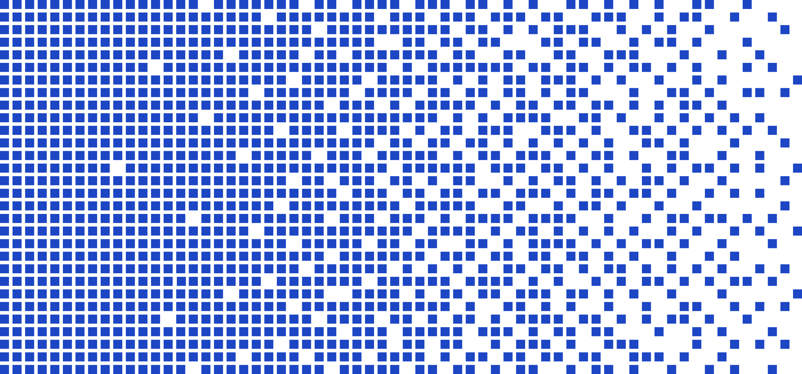
理想の人物像が「応募したくなる理由」を
一言で定義すること
多くの企業が「伝えたいこと」ばかりを発信してしまい、「求職者が知りたいこと」とのズレが生じています。
採用コンセプトを明確にすることで、採用活動のすべて（求人票・採用サイト・広告・面接）に一貫性が生まれ、「誰に」「何を」「どう伝えるか」がブレなくなります。結果として、ミスマッチの少ない質の高い応募獲得につながります。
Merit
このプランで得られる「4つの成果」
採用活動をアップデートし、攻めの採用へと転換します。
1
「自社に合う人」だけを
引き寄せるフィルタリング効果
万人に受ける言葉ではなく、ターゲット層が「自分のことだ！」と思う言葉を開発。母集団の質が劇的に向上し、価値観のミスマッチを未然に防ぎます。
2
他社との圧倒的な差別化で
欲しい人材を射抜く
募集から内定まで一貫したストーリーを伝えることで、求職者の納得感が最大化。条件面を超えた「入社への意志」を引き出します。
3
面接官による
「評価のブレ」を根本から解消
採用コンセプトが「選考基準の軸」となります。全面接官が共通の視点で合否判断を行えるようになり、採用スピードと一貫性が生まれます。
4
採用率の向上で採用単価を削減
Web検証テストで「勝てる言葉」を特定。反応の悪いPRを削減し、限られた予算で最大数のターゲット応募を獲得します。
貴社だけの 「勝ちパターン」を言語化します
今すぐ相談するBefore After
コンセプト一つで、採用はここまで「激変」する。
私たちは、採用コンセプトを磨き上げることで、自社の採用を根底から変革しました。
Before
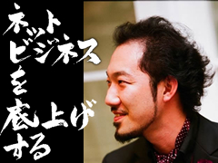
After
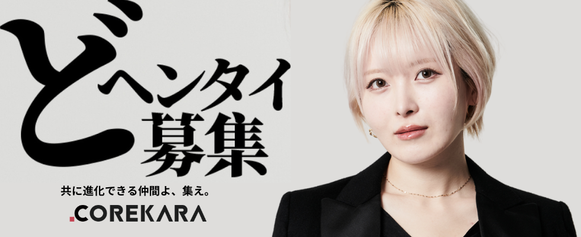
新卒採用単価
中途採用単価
応募者の志望動機
候補者の注目点
Before
500,000円
1,000,000円
「どこでも良いから入りたい」
給与・場所・服構成などの「条件」
After
75,725円
387,096円
「御社に入りたい」
理念・ビジョン・「カルチャー」
※自社（株式会社これから）の実績値に基づく比較
Flow
採用コンセプト開発の進め方
ただ作るだけではなく、ユーザーテストを行い、
反応率が一番高いコンセプトを採用します。
自社分析
経営陣や人事が中心となり、理想の人物像の特徴を具体的に可視化します。
魅力の棚卸し
制度・サービス・他社との差別化ポイントなど、会社の魅力を徹底的にピックアップします。
競合分析
競合会社の採用状況を分析し、どんなコンセプトや制度を打ち出しているか調査します。
モデル人材ヒアリング
採用実績のある社員からモデル人材を選び、入社動機や働くメリットを深掘りします。
コンセプト言語化→絞り込み
10〜20パターンのコンセプト案を作成し、議論を経て5パターンまで絞り込みます。
Web検証テスト
最も効果が期待できるコンセプトをWeb応募で検証。応募者の反応率で「最適解」を確定します。
A/B TESTING
リアルに刺さる言葉を選ぶ「検証テスト」
机上の空論ではなく、実際にターゲット層が反応するかを確かめます。
絞り込んだコンセプト案をもとに求人バナーを作成し、Facebook・Instagram・Threadsなどで配信。
「どの言葉が潜在層に刺さるか」をクリック率や応募率などの数値で冷静に判断し、最も反響が良いコンセプトを採用します。
社内の「感覚」による意見対立を防ぐ
本当にターゲットに届く言葉が見つかる
検証データはそのまま本番の広告運用に活用可能
検証イメージ
コンセプトA案
VS
コンセプトB案
Price
料金プラン
Case
導入事例
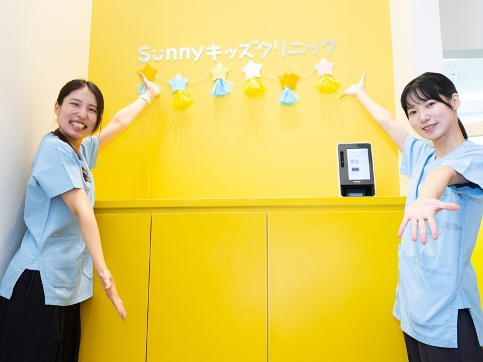
医療社団法人Sunny
理念に共感する"未来の仲間"はどう見つかったのか。採用の成功が組織の未来を創る、Sunnyの挑戦。
セントラルエンジニアリング株式会社
自社HP経由の採用が400％増加。理系学生との接点激減という課題を乗り越えた、エンジニア採用の「採用マーケティング」
株式会社ライオンハート
欲しい人材に焦点を当てたアプローチで、たった1週間で即戦力を採用！
BRANU株式会社
2か月でセールスマネージャー候補を採用！ミスマッチが減り､効果を実感しています。
株式会社セカツク
2か月でセールスマネージャー候補を採用！ミスマッチが減り､効果を実感しています。
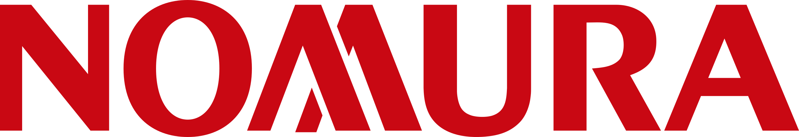
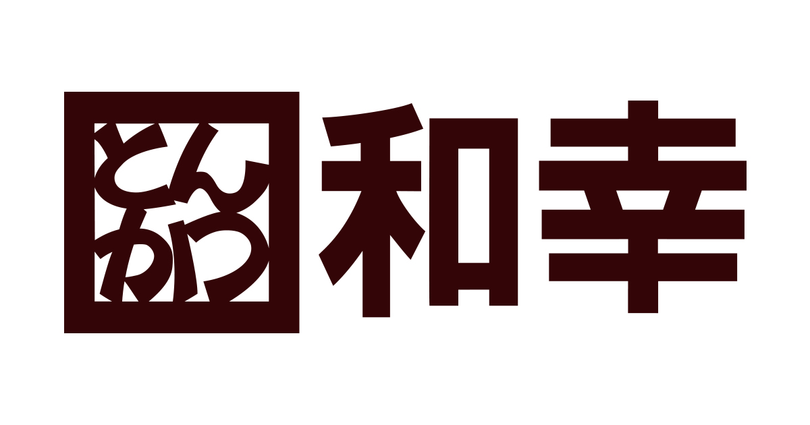
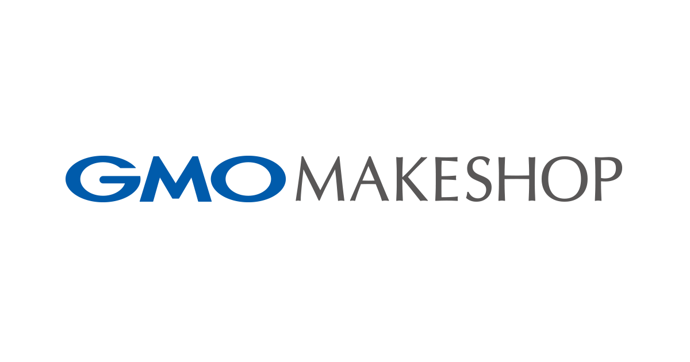
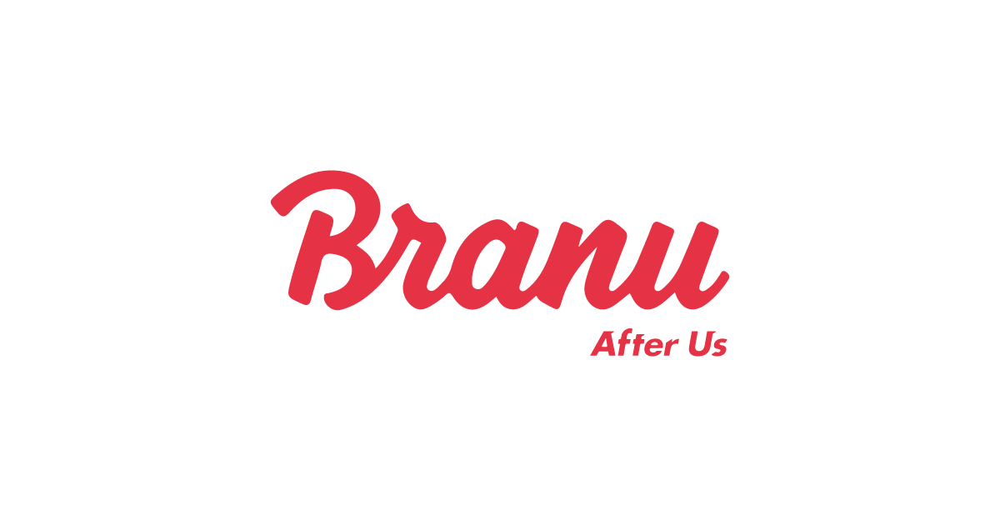
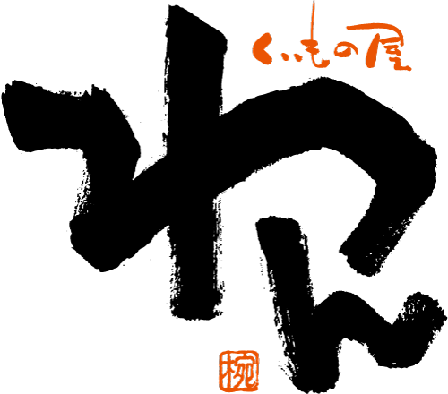
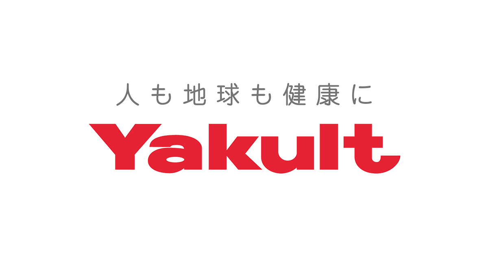
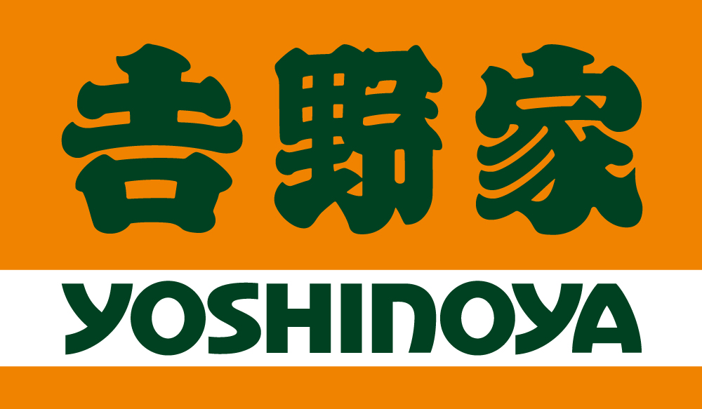
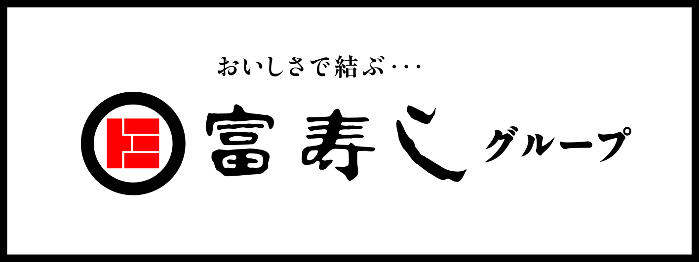
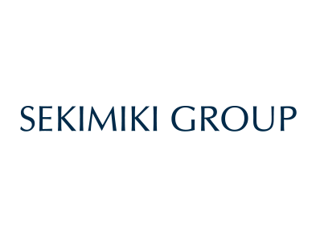
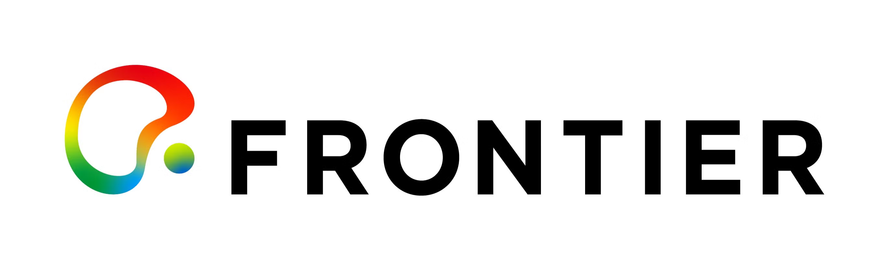
FAQ
よくある質問
採用コンセプトって、コピーと何が違うの？
コピーは"表現"で、コンセプトは"軸"です。軸が決まると求人・サイト・広告すべてが強くなります。
どれくらいの期間でできますか？
コンセプトを作った後、採用サイトにも反映できますか？
「応募が増えない」の前に、
まず"刺さる言葉"を確定しませんか？
採用活動は、伝え方ひとつで結果が変わります。
まずは現状の課題を伺い、最適な方向性をご提案します。